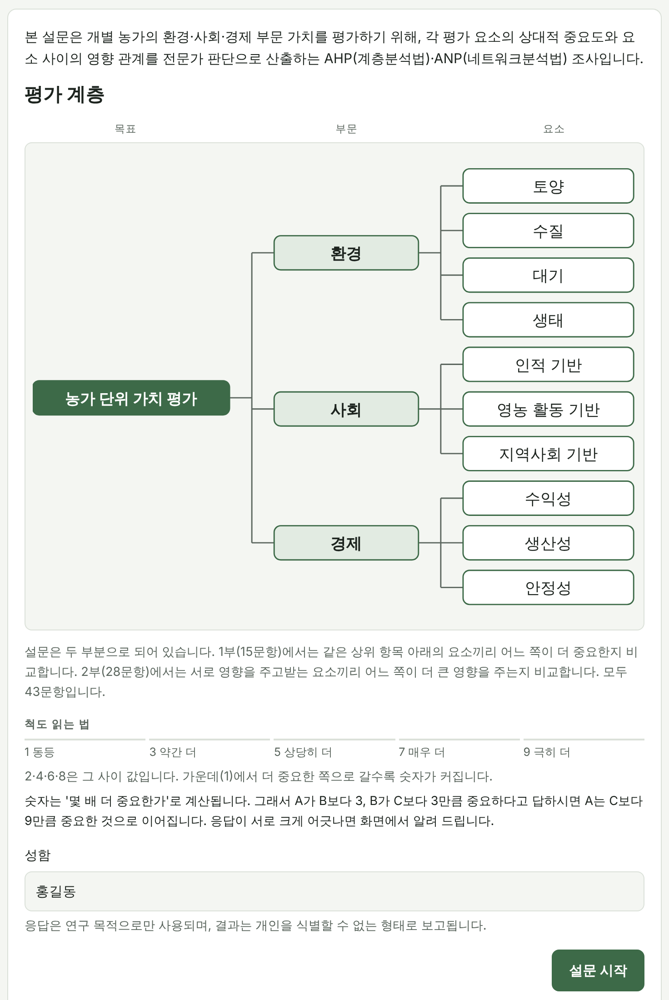
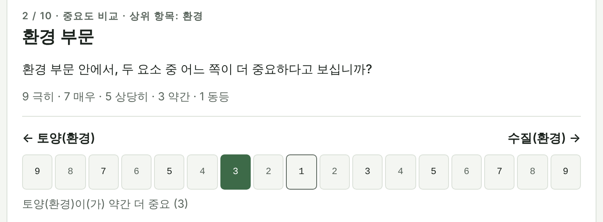
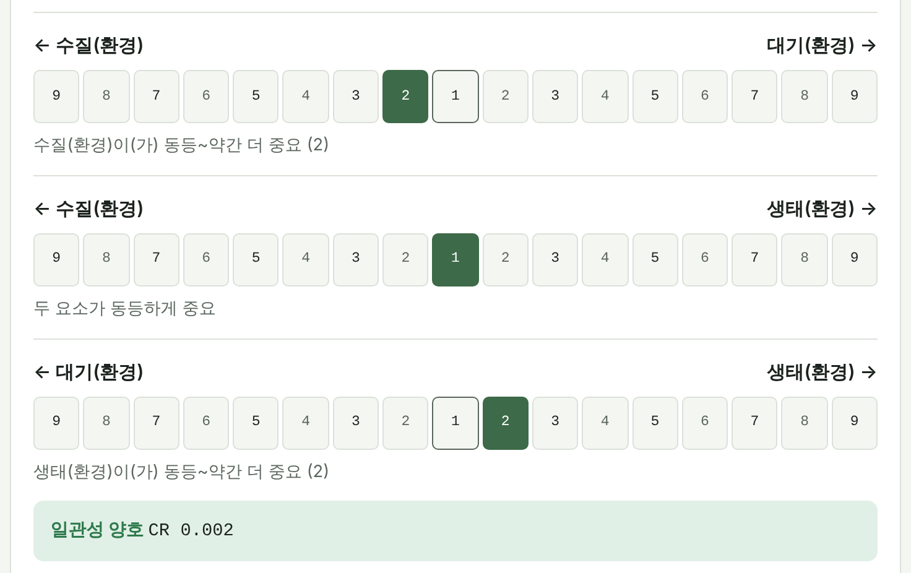
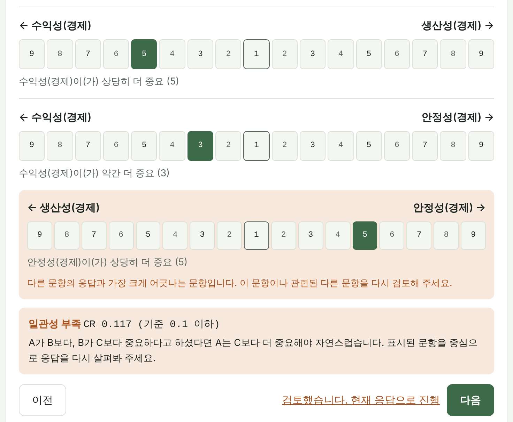
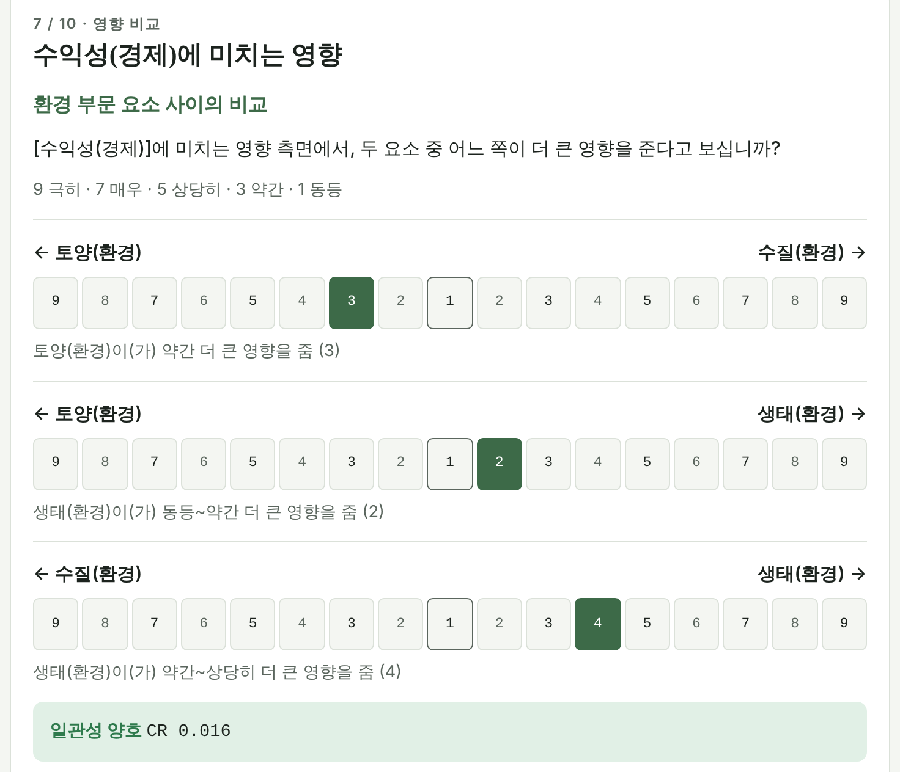
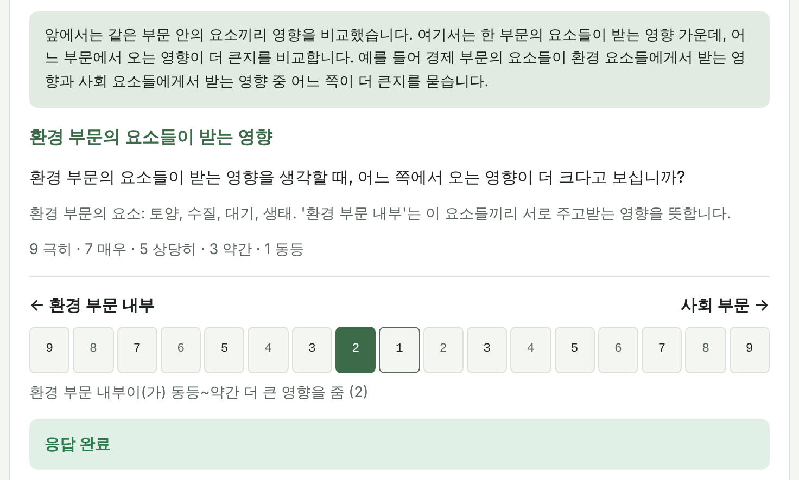
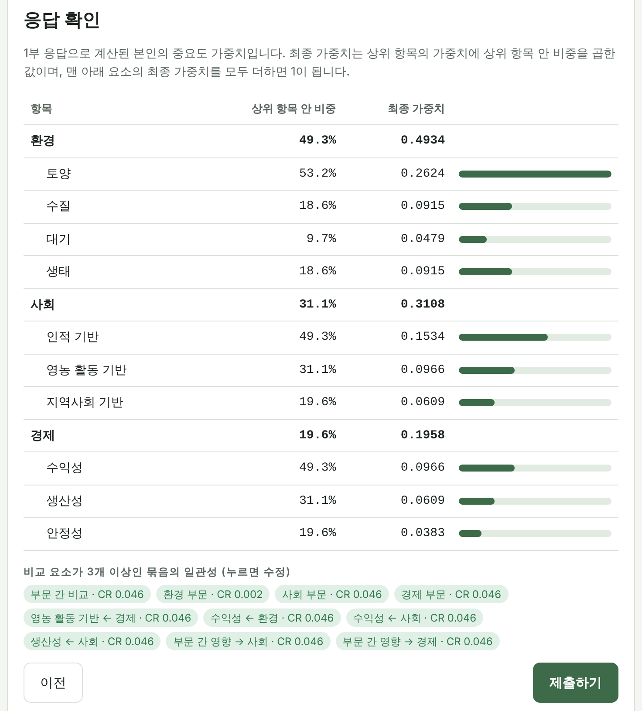

농가 평가체계 AHP·ANP 설문은 두 요소를 짝지어 비교하는 방식입니다. 아래 화면 예시를 한 번 훑어보시면 바로 응답하실 수 있습니다.
평가 계층(목표 → 부문 → 요소)을 확인하시고 성함을 입력한 뒤 [설문 시작]을 누릅니다. 같은 성함으로 다시 제출하시면 이전 응답이 새 응답으로 바뀝니다.

가운데 1은 두 요소가 같다는 뜻입니다. 왼쪽 요소가 더 중요하면 왼쪽으로, 오른쪽 요소가 더 중요하면 오른쪽으로 갈수록 숫자가 커집니다.

위 예시는 "토양이 수질보다 약간 더 중요하다(3)"는 응답입니다. 선택하면 척도 아래에 뜻이 문장으로 표시됩니다.
같은 상위 항목에 속한 요소끼리 농가를 평가할 때 어느 쪽이 더 중요한지 고릅니다. 부문 간 비교(환경·사회·경제) → 환경 → 사회 → 경제 순서로 나옵니다.

한 화면의 문항을 모두 답하면 아래에 일관성이 표시됩니다. '일관성 양호'면 [다음]으로 넘어가시면 됩니다.
숫자는 '몇 배'로 계산되어 서로 이어집니다. 아래 예시에서는 수익성이 생산성보다 5, 안정성보다 3만큼 중요하다고 답했으니 생산성보다 안정성이 조금 더 중요한 셈인데, 마지막 문항에서 안정성이 생산성보다 5만큼 중요하다고 답해 정도가 어긋났습니다.

여기부터는 중요도가 아니라 영향의 크기를 묻습니다. 사전 조사(DEMATEL)에서 서로 영향이 있다고 나타난 관계만 나옵니다. 영향을 받는 요소별로 한 화면씩, 같은 부문에 속한 요소끼리 비교합니다.

위 예시의 첫 문항은 "토양과 수질 중 수익성을 더 크게 좌우하는 것은 토양이며, 그 정도는 약간(3)"이라는 응답입니다.
한 부문의 요소들이 받는 영향이 어느 부문에서 더 많이 오는지 비교합니다. '○○ 부문 내부'는 그 부문 요소들끼리 서로 주고받는 영향을 뜻합니다.

위 예시는 "환경 요소들은 사회 요소들보다 환경 요소들끼리 주고받는 영향을 조금 더 크게 받는다(2)"는 응답입니다.
1부 응답으로 계산된 본인의 가중치와 묶음별 일관성이 표시됩니다. 아래 버튼을 누르면 해당 화면으로 돌아가 수정할 수 있습니다. 확인하신 뒤 [제출하기]를 누르시면 끝납니다.
